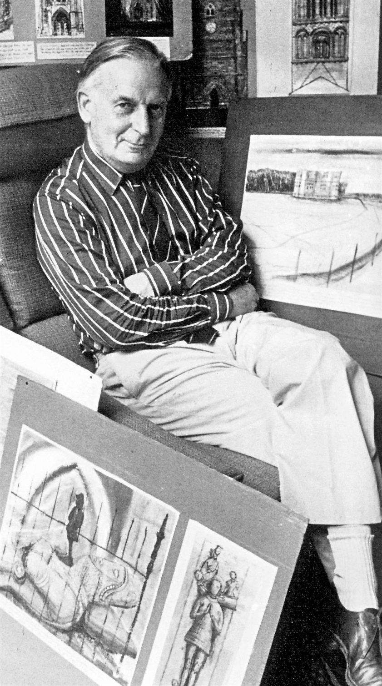

Monday, August the 20th, 2012
back to: title, date or indexes
“But the garden, that was the shocker. I could see a greenhouse, but I couldn't get into that, the door wouldn't open. The passion flowers had taken over, and beyond that the undergrowth closed in. Now this was a garden just 90-foot long, a garden in a street, and I couldn't see the end of it.
“Showing out of the undergrowth were statues which looked thousands of years old, some from the Middle Ages, some Roman, and there were barbaric heads that must have been even older. I turned to Bob, but all he said was ‘Oh, that was Dad’. He told me his father used to carve things and leave them in the garden until the green had grown over them, then he would take them to some churchyard and hide them in the long grass, saying ‘That'll give 'em something to think about’.”
‘Dad’ was J. L. Carr, the speaker is the man who bought his house in Kettering after Carr's death. From The Last Englishman : The Life Of J. L. Carr by Byron Rogers (2003).
